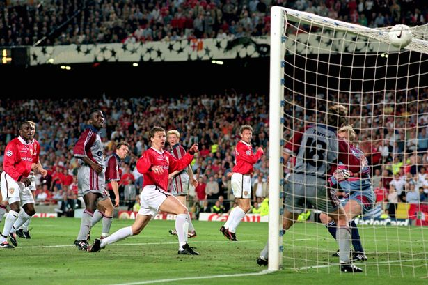
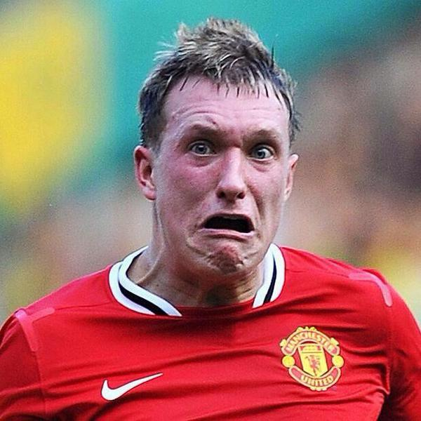
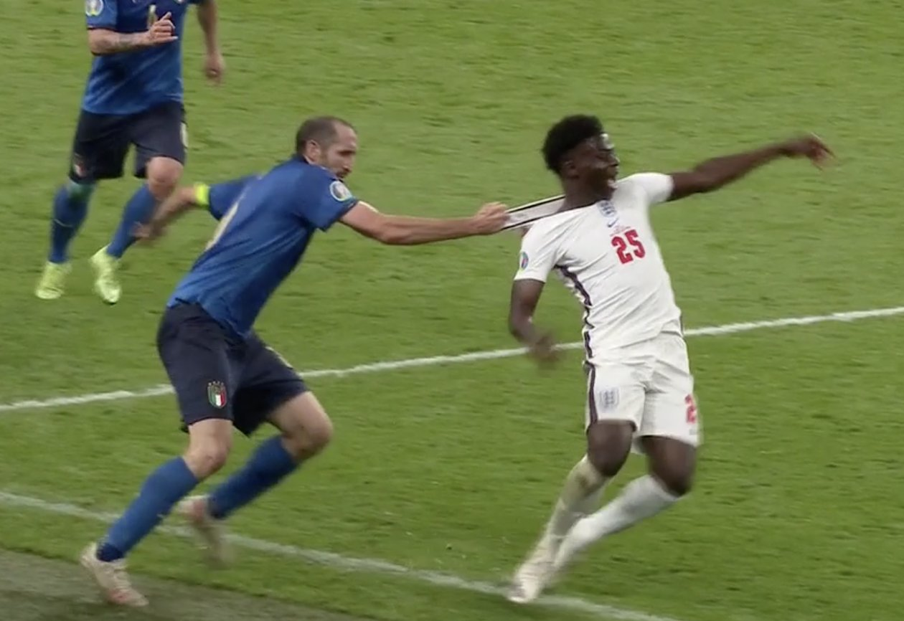
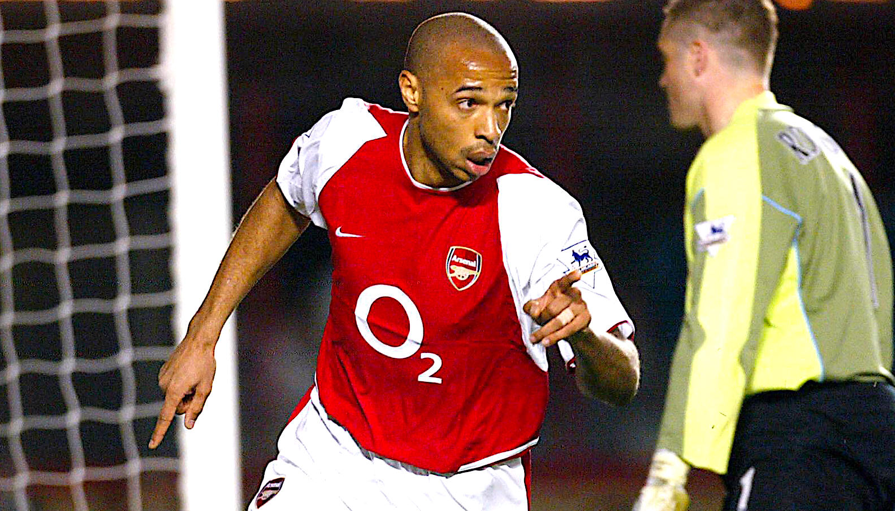
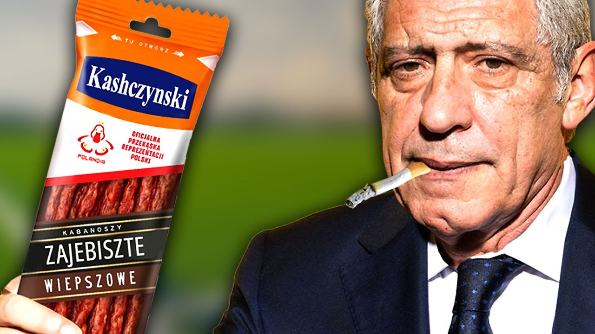
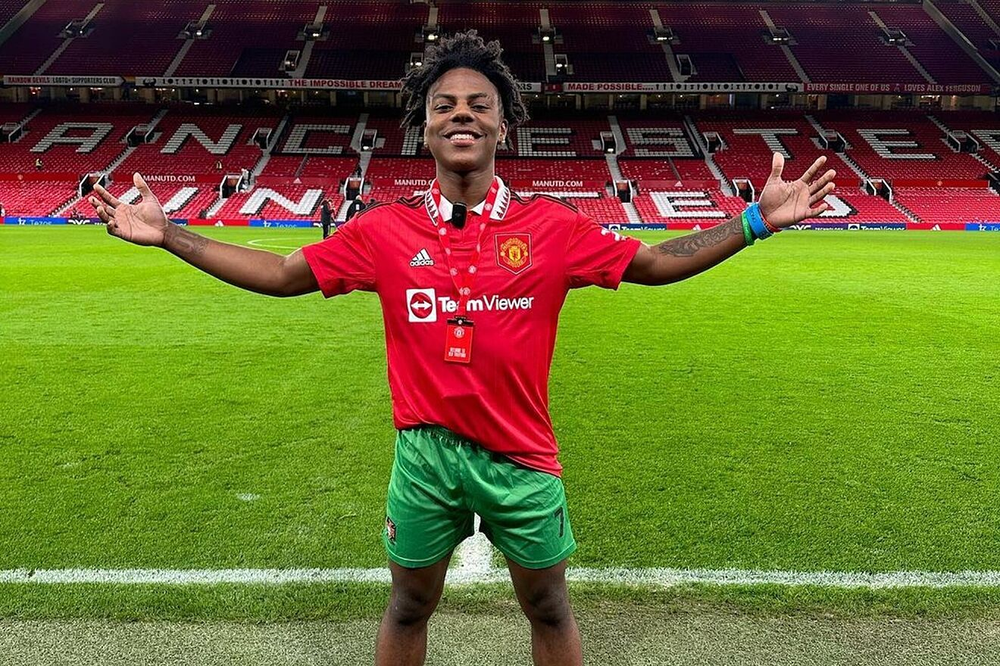

1. Mecze rozgrywane sa na polu gry wyznaczonym w postaci prostokata
o szerokosci od 45 do 90 m i dlugosci od 90 do 120 m
2.Zawodnicy jednej druzyny (poza bramkarzem) nosza w trakcie zawodow taki sam ubior
ktory odroznia ich od zawodnikow druzyny przeciwnej.
3.Pelny sklad druzyny liczy 11 zawodnikow, w tym bramkarz
4.Zawodnik druzyny atakujacej znajduje sie na pozycji spalonej, gdy jest na polowie przeciwnika i w
momencie podania do niego pilki ma przed soba mniej niz dwoch graczy druzyny przeciwnej
Pilka nozna jest najbardziej popularnym sportem na swiecie co przyciaga rowniez bogatych sponsorow
ktorzy chetnie umieszczaja swoje loga na koszulkach.
Popularnosc pilki noznej wsrod fanow zmierzyla firma badawcza Nielsen
40 proc. ludzi na swiecie interesuje sie tym sportem.
Z 37 proc. fanow pilki noznej to kobiety.
Pilka nozna powstala juz w latach 50. XIX wieku w Anglii i wymyslili ja tamtejsi studenci
W 1888 roku zostaly wymyslone rozgrywki ligowe, ktore sa organizowane w kazdym panstwie na swiecie
Do najpopularniejszych lig naleza m.in :Premier League, La Liga Santander, Ligue 1, Bundesliga czy Serie A TIM
A najpopularniejsze kluby to:Inter Mediolan, AC Milan, Juventus, FC Barcelona, Real Madryt, Chealsea, Arsenal
Tottenham,Manchester United, Manchester City, Liverpool, Bayern Monachium, Borussia Dortmund i P$G